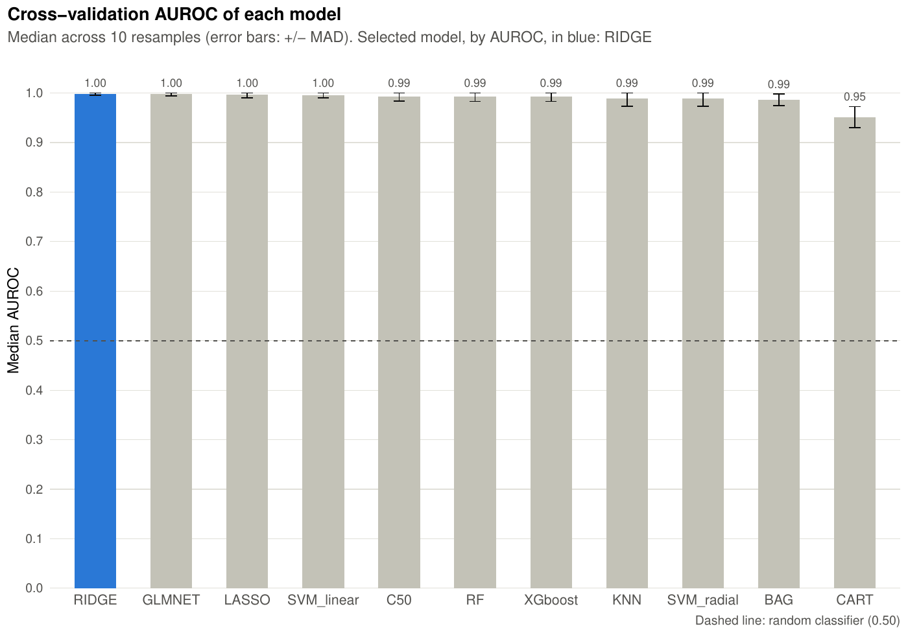
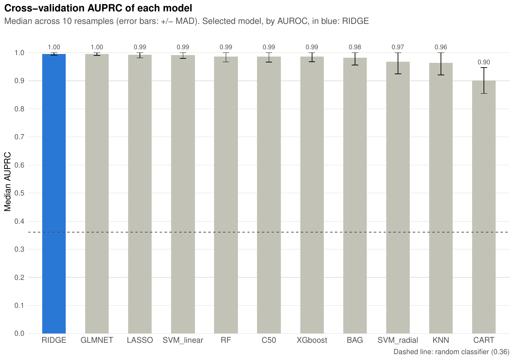
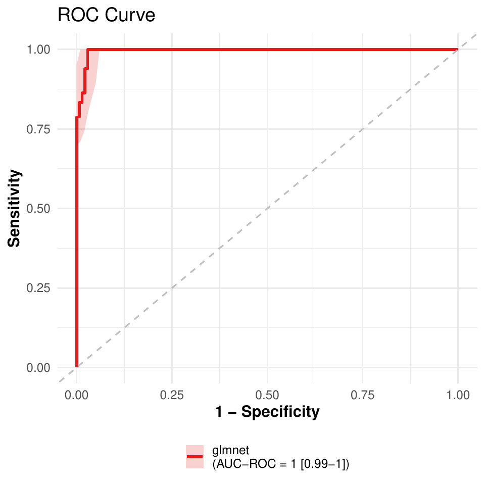
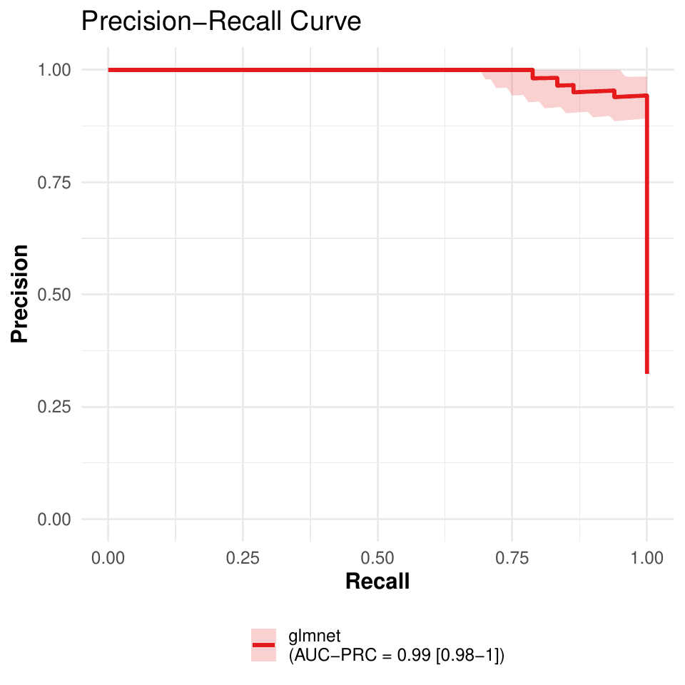

Classification
a1_classification.Rmd
library(pipeML)
library(dplyr)
#>
#> Attaching package: 'dplyr'
#> The following objects are masked from 'package:stats':
#>
#> filter, lag
#> The following objects are masked from 'package:base':
#>
#> intersect, setdiff, setequal, unionData
data_example_classification is the Breast Cancer
Wisconsin dataset: 9 cell features per sample and a target
column (1 = malignant, 0 = benign).
data <- pipeML::data_example_classification
X <- data %>% dplyr::select(-target)
y <- data$targetSplit the samples into a training and a test set:
set.seed(123)
train_idx <- caret::createDataPartition(y, p = 0.7, list = FALSE)
X_train <- X[train_idx, ]
X_test <- X[-train_idx, ]
y_train <- y[train_idx]
y_test <- y[-train_idx]Train models
compute_features.training.ML() trains and tunes 11
classification algorithms (bagged trees, random forest, C5.0, elastic
net, lasso, ridge, k-nearest neighbours, CART, linear and radial SVM,
and XGBoost) with repeated stratified k-fold cross-validation, and
selects the best one.
Key parameters:
-
trait.positive: value of
target_varconsidered as the positive class -
metric: metric used to tune the hyperparameters of
each model and to select the best model,
"AUROC"(default) or"AUPRC" - k_folds, n_rep: number of folds and repetitions of the cross-validation
-
ncores: number of cores used to run the folds in
parallel (
NULLruns sequentially) -
seed: random seed for the folds and the model
fitting (default
123), so results are reproducible -
preprocess: whether to remove near-constant and
highly correlated features (|r| > 0.9) from the training features
before the cross-validation (default
TRUE). The outcome is not used for this. Here it removesCell.size, which is highly correlated withCell.shape, so the models are trained on 8 of the 9 features. Usepreprocess = FALSEto train on the features as given -
return: whether to save the cross-validation
performance plots in
Results/(named withfile_name)
res <- compute_features.training.ML(features_train = X_train,
target_var = y_train,
task_type = "classification",
trait.positive = "1",
metric = "AUROC",
k_folds = 5,
n_rep = 2,
ncores = 2,
seed = 123,
file_name = "Example_classification",
return = TRUE)The selected model is a caret train object,
trained on all training samples with the hyperparameters selected by
metric (in bestTune):
res$Model
res$Model$bestTuneAll trained and tuned models (a model that predicts the same probability for all training samples is left out):
names(res$ML_Models)res$AUROC_median and res$AUPRC_median
compare the cross-validation performance of all the algorithms: the
median (Median_AUROC, Median_AUPRC) and the
MAD (MAD_AUROC, MAD_AUPRC) across resamples,
sorted from the best to the worst model. The performance of the selected
model per resample is in res$Model$resample:
res$AUROC_median
res$AUPRC_median
head(res$Model$resample)With return = TRUE, both tables are also saved as plots
in Results/
(AUROC_CV_methods_<file_name>.pdf and
AUPRC_CV_methods_<file_name>.pdf). In each plot:
- the models are sorted from the best to the worst, with the median value above each bar;
- the selected model (the best one for
metric) is in blue; - the error bars show the median plus and minus one MAD across resamples;
- the dashed line is the performance of a random classifier: 0.5 for AUROC, and the proportion of positive samples for AUPRC.

Figure 1. Cross-validation AUROC of the trained models.

Figure 2. Cross-validation AUPRC of the trained models. The blue bar is still the model selected by AUROC.
Predict on test data
compute_prediction() applies the selected model to the
test set. The test data must contain the features used for training, and
target_var must be in the order of the rows of
test_data, without missing values and with samples of both
classes (AUROC and AUPRC cannot be calculated otherwise):
pred <- compute_prediction(model = res$Model,
test_data = X_test,
target_var = y_test,
task_type = "classification",
trait.positive = "1",
file.name = "Example_classification",
return = TRUE)AUROC and AUPRC on the test set. Each is a list with the
estimate on the full test set and the lower
and upper bounds of its 95% confidence interval, from 1000
bootstrap resamples of the test samples:
pred$AUCPredicted probabilities of each class (yes is the
positive class):
head(pred$Predictions)Accuracy, sensitivity, specificity, precision, recall, F1 score and MCC at each probability threshold (one row per test sample, sorted by decreasing predicted probability):
head(pred$Metrics)With return = TRUE, the ROC and precision-recall curves
are saved in Results/ (named with file.name).
The shaded areas are pointwise 95% bootstrap confidence bands, also
returned in pred$Curve_bands.

Figure 3. ROC curve on the test set.

Figure 4. Precision-recall curve on the test set.
The curves can also be drawn directly with
get_curves():
get_curves(data = pred$Metrics,
color = "model",
auc_roc = pred$AUC$AUROC,
auc_prc = pred$AUC$AUPRC,
roc_band = pred$Curve_bands$ROC,
prc_band = pred$Curve_bands$PRC,
file.name = "Example_classification_curves")SHAP values
compute_shap_values() explains which features drive the
predictions of the selected model. It only needs the trained model:
shap <- compute_shap_values(model_trained = res$Model,
task_type = "classification",
seed = 123)
head(shap)See the Interpreting models with SHAP values tutorial for how to read and plot them.
Training and prediction in one step
When the test set is already prepared,
compute_features.ML() trains the models on the training set
and applies the selected one to the test set. The outcome is read from
coldata, whose row names must be the sample names of the
feature tables; trait is the outcome column:
res_onestep <- compute_features.ML(features_train = X_train,
features_test = X_test,
coldata = data,
task_type = "classification",
trait = "target",
trait.positive = "1",
metric = "AUROC",
k_folds = 5,
n_rep = 2,
ncores = 2,
file_name = "Example_onestep",
return = FALSE)res_onestep$Model is the output of
compute_features.training.ML(), and the test set results
are in AUC, Metrics, Prediction
and Curve_bands:
res_onestep$Model$Model
res_onestep$AUC